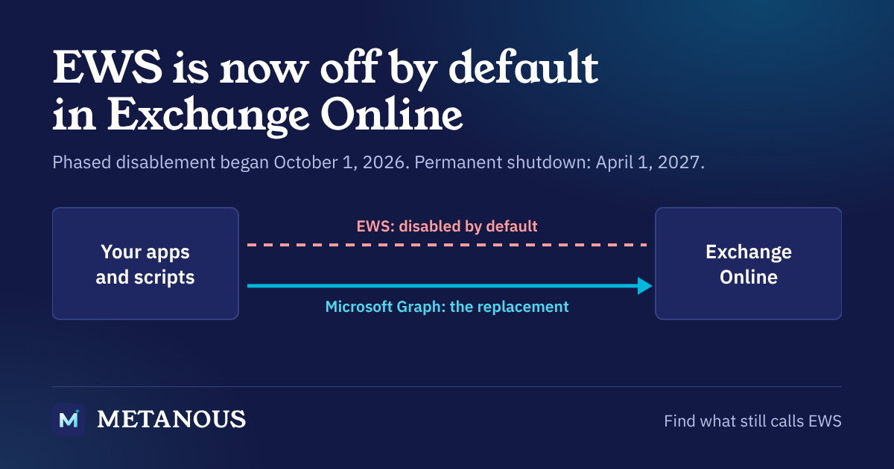

Did anyone check what still talks to your mailboxes through EWS?
Since October 1, 2026, Microsoft has been switching off Exchange Web Services (EWS) in Exchange Online, tenant by tenant. If an admin did not act beforehand, EWS is now disabled for the tenant by default, and anything that depends on it stops working.
This catches people because EWS rarely lives in one obvious place. It is the old line-of-business app that reads a shared mailbox. It is the backup tool, the CRM sync, the scanner that files emails, or the script someone wrote years ago.
Three facts worth knowing
- It affects Exchange Online only. Exchange Server on-premises still supports EWS.
- Admins can re-enable EWS for now. Microsoft has set April 1, 2027 for the permanent shutdown, after which the setting is removed from tenant admins.
- Microsoft's replacement is Microsoft Graph. It is not a like-for-like swap, so each app needs checking.
A sensible order of work
- List every app and script that uses EWS. The EWS usage report in the Microsoft 365 admin center shows what is calling it.
- Sort them into three groups: has a Graph version, needs a vendor update, needs rebuilding.
- Re-enable EWS only where you must, and put a date on switching it off again.
If a nightly job quietly stopped working in October, this may be why.
Source: Microsoft Exchange Team, "Exchange Online EWS, Your Time is Almost Up". Check Microsoft's page for the current schedule before you plan against these dates.